英文
英文玻恩，富克斯
编者按
本文作者是这篇文章令人感兴趣的原因之一。马克斯·玻恩是流亡到英国的德国人，1954年因为他在量子力学方面的工作获得了诺贝尔奖，而克劳斯·富克斯也是从德国流亡至英国并在英国工作的物理学家。后来富克斯加入了在美国新墨西哥州洛斯阿拉莫斯实施的“曼哈顿计划”，之后被英国政府以苏联间谍的名义定罪；刑满之后他回到柏林工作。他们这篇文章的观点认为，相对论并不像表现的那样，实际上它可以很好地处理一个粒子集合的质心问题。 英文
在相对论力学中是否存在一个类似于经典质心运动定律（总动量守恒）的定理，关于这个问题，就我们所知尚未找到一个满意的答案。爱丁顿[1]以这个事实作为出发点，对通常将波动力学应用到快速运动粒子的做法进行了一般性的抨击，而他自己却没有对此问题做出任何积极的贡献。这似乎就是此问题从未被认真对待的原因。 英文
在经典力学中，内部势能取决于粒子的瞬时相对位置；因此，我们可以将相对运动从质心的平移运动中分离出来。然而在相对论中，所有的力都是迟滞的，相互作用并不取决于瞬时相对位置，所以把相对运动从整个系统的平移运动中分离出来是没有意义的。 英文
量子力学把相互作用当作是由其他粒子的发射和重吸收所引起的，以此来规避这个问题。这使得我们需要通过一个相对论的和“倒易的”二次量子化公式来重新考虑这个问题。暂不考虑这个问题，我们在此将给出一些关于自由粒子的简单结果。显然，在这种情况下，必然存在一个“静止系统”Σ°，即一个总动量等于零的洛伦兹参考系。具体来说，这个问题就是要以一种不变量的形式对相对运动进行描述。 英文
我们先把经典推导变为允许进行推广的形式。如果
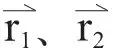
是两个粒子的位置矢量，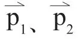
是它们的动量，我们可以得出相对位置的矢量和总动量的矢量为：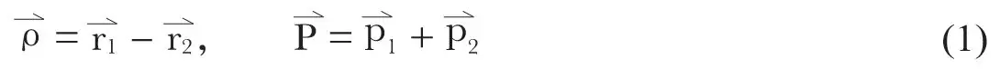
我们还可以确定其正则共轭变量，即矢量
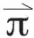
和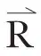
。经简单的计算表明，它们并不是唯一确定的，而是具有下列形式：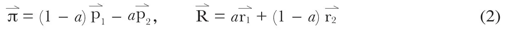
式中a是一个任意常数。因此，必须加入另一个条件。 英文
我们假定，动能
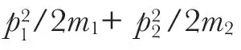
满足P2/2m+π2/2μ的形式。根据这个条件可以确定三个常数a、m和μ，即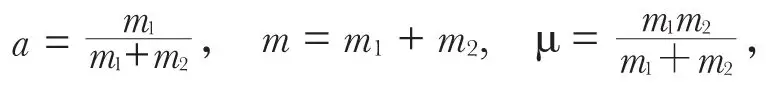
将它们代入式（2）可得相对动量和质心的通常表达式。 英文
在相对论中，两个自由粒子的能量E1、E2如下式：
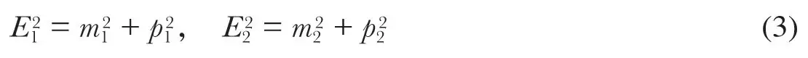
我们现在考虑4矢量
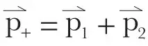
，E+ = E1 + E2以及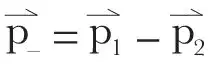
，E– = E1 −E2。简单的计算可导出：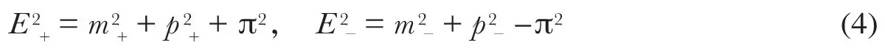
式中，m+= m1 + m2，m– = m1 – m2
且
π = 2m1m2 sinh Γ/2
（5）
其中Γ是这两个4矢量的“角距离”，如下式：
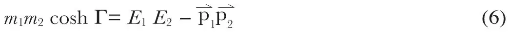
Γ是不变量，因此π也是不变量。在两个自由粒子的质量相等的情况下，π的含义是简单的。在静止系Σ°中，
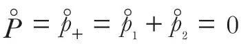
，我们已知m1–m2=m–=0，及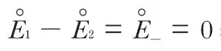
；因此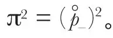
。这表明π是表示相对动量的矢量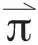
的长度。 英文
对于两个自由粒子的质量不相同的情况，在使下式成立的洛伦兹系（它总是存在的）中，是相对动量。
E1−E2= ±(m1−m2)
（4）中的第一个方程现可写为：
E2 = M2 + P2，M2= μ2 + π2，
（7）
式中，μ = m1 + m2是静止质量之和，M是总内能，它也代表整个系统的静止质量，
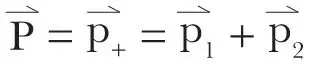
是总动量。 英文
取
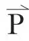
和的分量为新的正则动量，我们可以确定共轭坐标和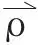
。它们对于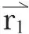
，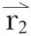
是线性的；然而系数不是常数，而是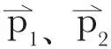
的函数。 英文
当很小时，该公式可简化为经典形式。 英文
值得注意的是，在相对论中存在着“倒易”[2]定理，它是通过交换坐标和动量得到的。 英文
（沈乃澂 翻译；张元仲 审稿）